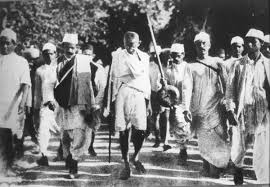

By 1900, although the Congress had emerged as an all-India political organisation, its achievement was undermined by its singular failure to attract Muslims, who
felt that their representation in government service was inadequate. Attacks by Hindu reformers against religious conversion, cow slaughter, and the preservation of
Urdu in Arabic script deepened their concerns of minority status and denial of rights if the Congress alone were to represent the people of India. Sir Syed Ahmed Khan
launched a movement for Muslim regeneration that culminated in the founding in 1875 of the Muhammadan Anglo-Oriental College at Aligarh, Uttar Pradesh
(renamed Aligarh Muslim University in 1920). Its objective was to educate wealthy students by emphasising the compatibility of Islam with modern western knowledge.
The diversity among India's Muslims, however, made it impossible to bring about uniform cultural and intellectual regeneration.

The nationalistic sentiments among Congress members led to the movement to be represented in the bodies of government, to have a say in the legislation and
administration of India. Congressmen saw themselves as loyalists, but wanted an active role in governing their own country, albeit as part of the Empire. This trend
was personified by Dadabhai Naoroji, who went as far as contesting, successfully, an election to the House of Commons of the United Kingdom, becoming its first Indian
member.
Bal Gangadhar Tilak was the first Indian nationalist to embrace Swaraj as the destiny of the nation. Tilak deeply opposed the then British education system that
ignored and defamed India's culture, history and values. He resented the denial of freedom of expression for nationalists, and the lack of any voice or role for
ordinary Indians in the affairs of their nation. For these reasons, he considered Swaraj as the natural and only solution. His popular sentence "Swaraj is my
birthright, and I shall have it" became the source of inspiration for Indians. In 1907, the Congress was split into two factions: The radicals, led by Tilak, advocated civil agitation and direct revolution to overthrow the British Empire and the
abandonment of all things British. The moderates, led by leaders like Dadabhai Naoroji and Gopal Krishna Gokhale, on the other hand wanted reform within the framework
of British rule. Tilak was backed by rising public leaders like Bipin Chandra Pal and Lala Lajpat Rai, who held the same point of view. Under them, India's three great
states – Maharashtra, Bengal and Punjab shaped the demand of the people and India's nationalism. Gokhale criticised Tilak for encouraging acts of violence and disorder.
But the Congress of 1906 did not have public membership, and thus Tilak and his supporters were forced to leave the party.
But with Tilak's arrest, all hopes for an Indian offensive were stalled. The Congress lost credibility with the people. A Muslim deputation met with the Viceroy,
Minto (1905–10), seeking concessions from the impending constitutional reforms, including special considerations in government service and electorates. The British
recognised some of the Muslim League's petitions by increasing the number of elective offices reserved for Muslims in the Indian Councils Act 1909. The Muslim League
insisted on its separateness from the Hindu-dominated Congress, as the voice of a "nation within a nation".
In 1907, the Congress was split into two factions: The radicals, led by Tilak, advocated civil agitation and direct revolution to overthrow the British Empire and the
abandonment of all things British. The moderates, led by leaders like Dadabhai Naoroji and Gopal Krishna Gokhale, on the other hand wanted reform within the framework
of British rule. Tilak was backed by rising public leaders like Bipin Chandra Pal and Lala Lajpat Rai, who held the same point of view. Under them, India's three great
states – Maharashtra, Bengal and Punjab shaped the demand of the people and India's nationalism. Gokhale criticised Tilak for encouraging acts of violence and disorder.
But the Congress of 1906 did not have public membership, and thus Tilak and his supporters were forced to leave the party.
But with Tilak's arrest, all hopes for an Indian offensive were stalled. The Congress lost credibility with the people. A Muslim deputation met with the Viceroy,
Minto (1905–10), seeking concessions from the impending constitutional reforms, including special considerations in government service and electorates. The British
recognised some of the Muslim League's petitions by increasing the number of elective offices reserved for Muslims in the Indian Councils Act 1909. The Muslim League
insisted on its separateness from the Hindu-dominated Congress, as the voice of a "nation within a nation".